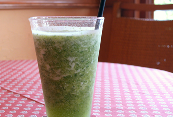

SHOP INFORMATIONCafé Ballade
手作りにこだわる洋食カフェ

倉敷駅から歩いて10分ほどの場所にある「Café Ballade」は、女性やお年寄りが一人でも入りやすいアットホームで可愛らしい雰囲気。
以前は喫茶店だった建物を、プロバンス風に改装し、1997年に食事メインの洋食カフェとしてオープンしました。
家庭料理のあたたかさを味わってもらおうと、メニューは全て手作りにこだわっています。
清潔感ある可愛らしい店内
店内は、オーナーがプロバンスで買ってきた陶器や趣味で集めた小物などの雑貨でまとめられ、ほんわかした雰囲気。
お店の入り口やお手洗いまで、小物一つ一つに趣向が凝らされていて、さりげないセンスが光ります。
全て手作りのフードメニューが充実
ヘルシーな家庭料理を提供したいという思いがあり、なるべく野菜を中心に使い、メニューは全て手作りしています。
フードメニューはハンバーグやカニクリームコロッケ、ドリア、スパゲティなど種類が豊富。
毎日2、3種類並ぶ手作りのケーキもおすすめ。
ボリューム満点のランチセット
日替りのメインディッシュ2品にライスorパン、みそ汁、ドリンクがついた「Aランチデラックス」。
この日のメインディッシュは、ポークピカタのトマトソースとエビとホタテのフライでした。
チーズ風味のポークピカタは自家製のトマトソースと相性抜群。
付け合わせには、カボチャのマッシュ、根菜の煮物、サラダまでついてボリューム満点です。
おすすめスパゲティ
トマト系、オイル系、クリーム系と、スパゲティも種類豊富ですが、中でもおすすめは「たらこのスパゲティ」。
ちょうど良い具合に茹でられたスパゲティを口の中に入れると、たらこと刻み海苔、青じその香りが広がります。
付け合わせの大根おろし、なめたけ、わさびを加えると、また違った味を楽しむことができます。
ビタミン豊富なドリンク
ドリンクメニューにも手を抜かない「Café Ballade」のおすすめは、パセリ、パイン、りんごをミックスしたビタミンスムージー。
砂糖などの甘味料は一切入れず、パインだけで甘さを出しているのでサッパリとした味わい。
ヘルシーで美肌効果もあるので女性に人気です。
アットホームな空間で、気軽に味わえる家庭料理を
ランチタイムには会社員や女性グループがよく訪れる「Café Ballade」は、美観地区から徒歩1分。
周辺には「市立美術館」や「市立図書館」、「自然史博物館」などの文化施設があり、隣に「ホテル日航」、斜め向かいに「ホテルリソル倉敷」と、芸術鑑賞・観光などにとても便利な場所です。
10時から21時までオープンしているので、ランチやディナー、読書をしながらのティータイムにいかがでしょう。
Googleマップでみる
一覧に戻る